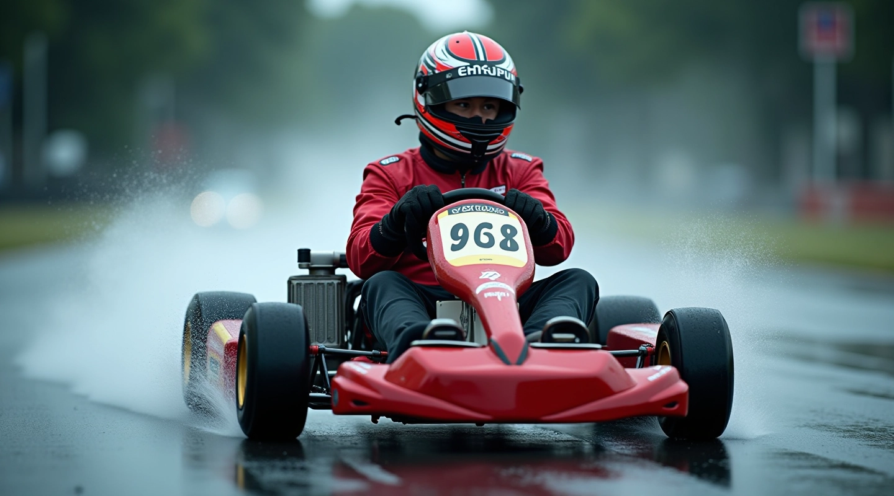
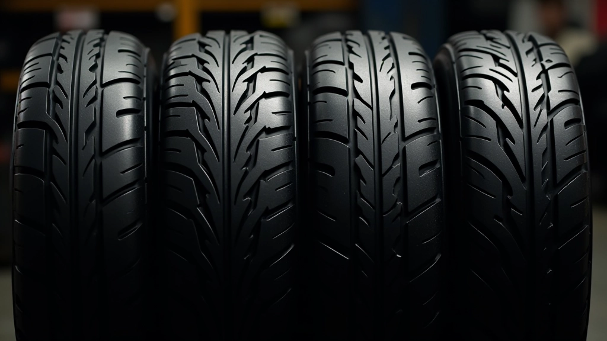
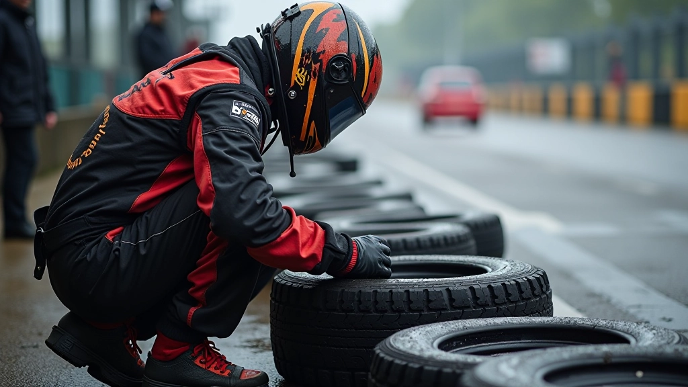

أساسيات التحكم بالكارت على الأسفلت المبلل
تعلم المبادئ الأساسية لضبط المقود والتعامل مع فقدان الجر، مع التركيز على تقنيات السيطرة الحاسمة.
اقرأ المزيددليل شامل لاختيار الإطارات المناسبة والعناية بها عندما يكون المسار رطبًا
عندما يكون المسار مبللًا، يتغير كل شيء. الإطار ليس مجرد قطعة من المطاط — إنه الوحيد الذي يربطك بالأسفلت. على المسارات الرطبة، يقل الاحتكاك بشكل كبير، وهذا يعني أن اختيارك للإطار سيحدد الفرق بين أداء ممتازة وفقدان السيطرة تمامًا.
الإطارات المصممة خصيصًا للظروف المبللة تحتوي على نقوش عميقة وتركيبة مطاطية مختلفة تسمح بتصريف أفضل للماء وتحافظ على الجر حتى عندما يكون السطح متغطيًا بالمياه. نحن سنشرح لك كيفية اختيار الإطار الصحيح وكيفية الحفاظ عليه ليعطيك أفضل أداء في كل مرة.
هناك فئتان رئيسيتان من الإطارات تستخدم على المسارات الرطبة. الإطارات ذات النقوش العميقة (Treaded Tires) وهي الخيار الأساسي للمسارات المبللة جزئيًا. تحتوي على أخاديد عديدة تساعد في تصريف الماء بعيدًا عن سطح التلامس، مما يقلل من خطر الانزلاق.
أما الإطارات الوسيطة (Intermediate Tires) فهي تُستخدم عندما يكون المسار رطبًا لكن ليس مغمورًا بالمياه. تحتوي على نقوش أقل عمقًا من إطارات المطر الكاملة، لكنها أكثر من الإطارات الجافة. اختيارك يعتمد على كمية الماء الفعلية على المسار في يوم السباق.

الفحص المنتظم للإطارات ليس اختياريًا — إنه ضروري. قبل كل جلسة قيادة على مسار رطب، يجب أن تتحقق من عمق النقوش. النقوش التي تقل عن 3 ملليمترات قد لا توفر تصريفًا كافيًا للماء، مما يزيد من خطر الانزلاق.
استخدم أداة قياس النقوش البسيطة (Tread Depth Gauge) — وهي أداة رخيصة وسهلة الاستخدام. ضعها في أعمق جزء من النقش وسجل القياس. إذا كنت تقود بسرعات عالية على مسار رطب، فالنقوش العميقة (5-6 ملليمترات) ستعطيك أداء أفضل بكثير.
تفقد أيضًا حالة السطح الجانبي للإطار. أي تشققات صغيرة أو تآكل غير متساوٍ قد يشير إلى مشكلة في المحاذاة أو ضغط الهواء.
بعد القيادة على مسار رطب مباشرة، نظف الإطارات بماء عادي لإزالة الطين والأوساخ. الأوساخ المتراكمة قد تسد النقوش وتقلل من فعالية الإطار في الجلسة التالية.
ضغط الهواء الصحيح (عادة 0.8 إلى 1.0 بار للكارت) يؤثر على أداء الإطار بشكل كبير. الضغط المنخفض يزيد التآكل ويقلل الاستجابة. تحقق من الضغط بانتظام، خاصة قبل القيادة على مسار مبلل.
خزّن الإطارات في مكان بارد وجاف بعيدًا عن أشعة الشمس المباشرة. الحرارة الشديدة تؤثر على تركيبة المطاط وتقلل من عمرها الافتراضي. إذا لم تستخدم الإطارات لفترة، تأكد من أنها في حالة جيدة قبل استخدامها مجددًا.
ليست كل الظروف الرطبة متساوية. قد تكون البدايات مبللة لكن المسار يجف تدريجيًا خلال الجلسة. في هذه الحالات، تحتاج إلى التفكير بذكاء حول اختيارك.
إذا بدأت الجلسة بمسار مبلل جدًا لكنك تتوقع أن يجف، ابدأ بإطارات النقوش العميقة. ستحصل على جر أفضل في البدايات الحرجة. مع جفاف المسار تدريجيًا، ستحتاج إلى تعديل أسلوب القيادة، لكن الإطار سيبقى فعالًا.
إذا كان المسار رطبًا بشكل ثابت طوال الجلسة، فالإطارات الوسيطة قد تكون اختيارًا أفضل لأنها توفر توازنًا بين الجر والسرعة.

لا تحاول القيادة بإطارات جافة على مسار مبلل. قد يبدو أنك تحصل على جر في البدايات، لكن الماء سيتراكم بين الإطار والمسار، مما يسبب انزلاقًا مفاجئًا وفقدانًا للسيطرة. الإطارات المخصصة للرطوبة موجودة لسبب — استخدمها.
هذا المقال يقدم معلومات تعليمية عامة حول اختيار وصيانة إطارات الكارت للظروف المبللة. النصائح والتوصيات هنا مبنية على الممارسات الشائعة والمعرفة العملية، لكنها قد لا تنطبق على جميع الحالات أو الكارتات المختلفة. يجب عليك دائمًا اتباع توصيات الشركة المصنعة لإطاراتك وكارتك، والتشاور مع متخصصين محترفين إذا كان لديك شكوك أو مخاوف بشأن السلامة أو الأداء.
الإطارات الصحيحة هي أساس القيادة الآمنة والفعالة على المسارات المبللة. اختيار النوع المناسب — سواء كانت إطارات نقوش عميقة أو وسيطة — يعتمد على الظروف المحددة ليوم القيادة. لكن الاختيار وحده لا يكفي. العناية المستمرة بفحص النقوش، التنظيف المنتظم، وفحص الضغط ستضمن أن إطاراتك تبقى في أفضل حالة دائمًا.
تذكر أن إطاراتك هي الوحيدة التي تربطك بالمسار. استثمر الوقت والاهتمام في اختيارها والعناية بها، وستلاحظ تحسنًا ملموسًا في أدائك وثقتك عند القيادة على الأسطح الرطبة. القيادة على مسار مبلل ليست مرعبة — إنها ممتعة عندما تكون لديك الأدوات والمعرفة الصحيحة.